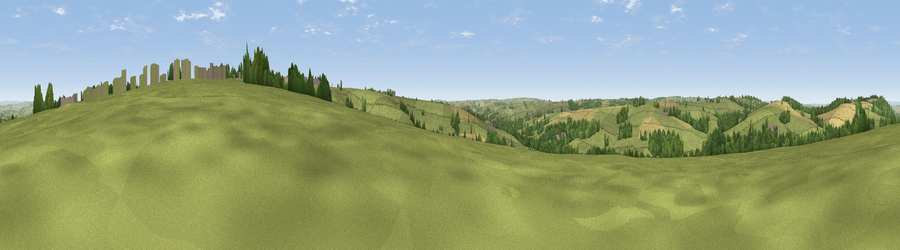

Viewpoint near Frome St Quintin
#34276 in England · top 81% of its area beats it · near Frome St QuintinWhere it is
The exact computed spot (ST 59725 03125). Click the marker for map links.
The view, rendered

A 360° render of this exact spot computed from the terrain model, tree cover and land cover — summer colours, afternoon light, calibrated against photographs of famous viewpoints. Real trees, hedges and buildings will differ in detail.
The panorama
Grey silhouette: terrain skyline in each direction (720 bearings, Earth curvature and refraction included). Dashed green: skyline with trees (+15 m) and buildings (+8 m) as obstacles. Blue strip: how far the ground is visible on each bearing.
Where the view opens
Wedge length = distance to the farthest visible ground on that bearing (vegetation-aware). Rings at 10, 25 and 50 km.
What fills the view
71% grassland · 18% woodland · 9% cropland · 1% built-up
Angular shares of the visible panorama (visual magnitude), not map area. Landscape diversity 0.36 (0–1 Shannon).
Key numbers
More beautiful places nearby
The staircase of upgrades: each row has a higher view potential than everything closer. Driving times are estimates from straight-line distance, calibrated against real road routing — check an actual route before setting out.
| Place | Direction | Drive | Score |
|---|---|---|---|
| Viewpoint near Evershot | NW · 1 km | ~4 min | 40.7 |
| Viewpoint near Batcombe | ENE · 3 km | ~7 min | 60.0 |
| Viewpoint near Chetnole | NNW · 3 km | ~8 min | 67.4 |
| Viewpoint near Hilfield | ENE · 6 km | ~12 min | 71.6 |
| Viewpoint near North Poorton | SW · 8 km | ~16 min | 75.4 |
| Viewpoint near North Poorton | WSW · 9 km | ~18 min | 77.0 |
| Viewpoint near Nettlecombe | SW · 10 km | ~19 min | 79.3 |
| Viewpoint near Askerswell | SSW · 10 km | ~20 min | 81.7 |
50.82625, -2.57319 · source: screening · position refined by local search. Computed location — check access rights before visiting.